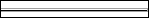

iTest User's Guide
The ADT Separator display object adds structure to the display. In addition, you can change the control’s foreground and background colors to create depth on a display.
ADT Separator

General Tab
| Option | Description |
| Orientation | This field allows you to select whether the separator will be horizontal or vertical (you may have to scroll down in the drop-down to view both options). |
| Control ID | If you have multiple separators and will be programmatically changing them in any way (e.g., sending a mailslot to update the display) you’ll need a different Control ID for each. If this is the only separator on the display or you have multiple separators that you won’t be changing programmatically, use the ADT Separator default. |
| Permit Runtime Changes | When selected, allows changes to be made programmatically. |
These properties are useful when issuing the following mailslot message:
\\.\mailslot\DisplayName>>$SETITEMPROPERTY ControlID PropertyName PropertyValue
The following are the names of the properties that can be changed by mailslot message to the display. These property names may or may not be the same as the property names shown on the display object property setup dialogs. Most of these property names are self-explanatory. The first column is the data type of the property.
The int or OLE_COLOR for color is the color RGB values. “BSTR” means the type of the property is string. “int”, “float”, “long”, “short”, “double” means the type of the property is number. “Boolean” means the property value should be 1 or 0.
Font property syntax is complicated.
<font name>,<bold>,,<italic>,<font size>,,<strikeout>,<underline>,
example: Arial,0,0,0,97500,0,0,0,400
ADT Separator Object Properties
| Type | Property | Notes |
| int | ForeColor | - |
| int | BackColor | - |
| long | Orientation | - |
| long | Thickness | - |
| long | Depth | - |
| bool | ChangesOK | - |